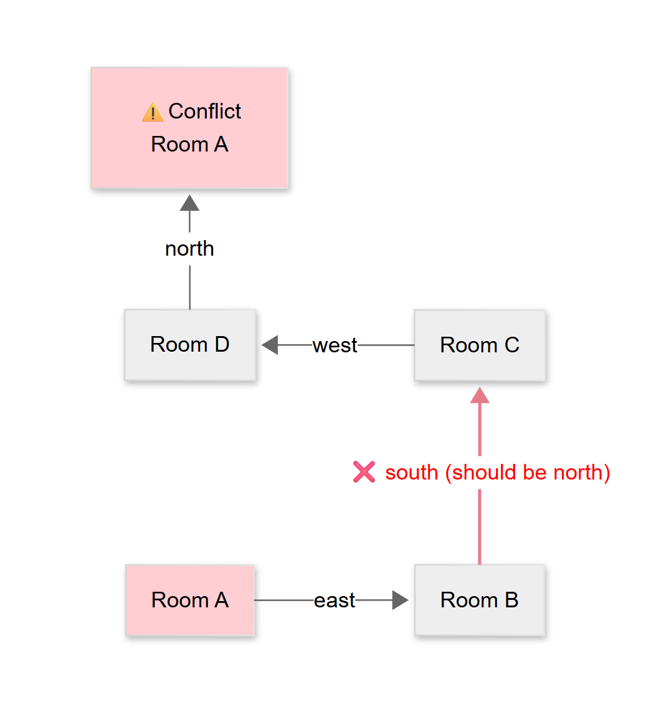
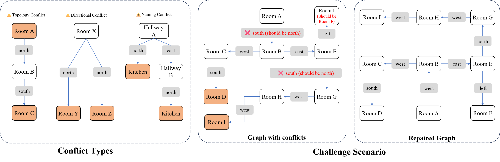

When LLM agents build navigation graphs incrementally from textual observations, small errors made early can silently propagate, manifesting as structural conflicts only when sufficient context has accumulated. This temporal gap between error introduction and detection is exacerbated by coupled dependencies, where one bad edge triggers cascading mistakes.
We present MapRepair, a history-aware framework for detecting and repairing topological inconsistencies in LLM-generated navigation graphs. At its core are three components: (i) explicit conflict detection over three domain-invariant constraints (topological, directional, naming); (ii) a Version Control module that records every modification together with its originating observation, enabling time-aware tracing and rollback; and (iii) an Edge Impact Score (EIS) that prioritizes repair candidates by estimating the downstream effect of each edge.
On the refined MANGO benchmark, MapRepair resolves 68.9% of conflicts with 54.9% accuracy, versus 21.9% / 5.8% for the direct baseline. On Chapters 16 and 17 of Dream of the Red Chamber, MapRepair reaches 94.3% node recall (+8.6 pts) and 88.2% edge recall (+55.8 pts) compared to direct incremental mapping.
Most LLM-generated graph errors do not surface immediately. A wrongly labeled direction at step 5 may produce no visible conflict until a later exploration step places two nodes at the same coordinate. MapRepair is designed around this delayed manifestation pattern: conflict detection fires whenever the structural invariants are violated, and a history-aware repair stage then traces back to the true error.


Two distinct rooms cannot occupy the same physical position (physical exclusivity).
A single doorway cannot lead in two directions simultaneously (directional uniqueness).
Each location has a unique identity that should not be reused for different places.
Checks every incremental edge addition against the three structural invariants. Runs in O(|E|).
Finds the lowest common ancestor on the reasoning history tree, narrowing the candidate edges to a divergent subpath.
Ranks candidates by reachability, conflict count, and usage; the LLM queries Version Control for the original observation to decide the fix.
A 9-node environment where a directional error at step 5 triggers a topological conflict only at step 20 (a 15-step temporal gap). Step through the walkthrough to see error propagation, LCA filtering, and EIS + VC repair in action.
The original MANGO benchmark contains pre-existing structural conflicts in its ground truth (e.g., the
zork2 carousel room has two outgoing "north" edges), making it impossible to define a reliable
repair metric. We release a programmatically corrected version following a deterministic 5-step
pipeline (action filtering, directional / topological / reverse conflict resolution, self-loop removal)
with no manual intervention.
17.5 nodes and 28.5 edges per game on average; 71.5% of edges are bidirectional; 14 distinct movement actions.
@inproceedings{zhang2026maprepair,
title = {Constructing Coherent Spatial Memory in LLM Agents through Graph Rectification},
author = {Zhang, Puzhen and Chen, Xuyang and Feng, Yu and Jiang, Yuhan and Meng, Liqiu},
booktitle = {Under review},
year = {2026},
institution = {Technical University of Munich}
}